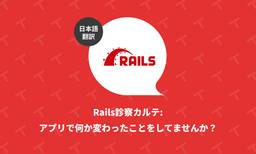
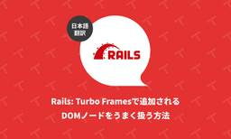
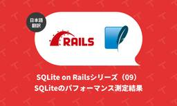

TechRacho
https://techracho.bpsinc.jp
TechRacho（テックラッチョ）は、BPSスタッフがおくるシステム開発＋αのアイデアマガジンです。Ruby on Railsネタ、EPUBの電子書籍ビューワに関連したAndroid/iOS開発ネタが多いです。社内の雰囲気がわかる記事もあるので興味をもってくださる方はぜひご覧ください。
フィード

Rails診察カルテ: アプリで何か変わったことをしてませんか？（翻訳） 1
1
TechRacho
概要 元サイトの許諾を得て翻訳・公開いたします。 英語記事: Is your Rails application special? | Arkency Blog 原文公開日: 2025/03/07 原著者: Piotr Romańczuk 日本語タイトルは内容に即したものにしました。 Rails診察カルテ: アプリで何か変わったことをしてませんか？（翻訳） 🔗 要約 レガシーなRailsアプリケーションは、こちらの予想を覆すこともあるので、「こう振る舞うのが普通」という思い込みは禁物です。 アプリケーションを安定させるための第一歩は、オブザーバービリティ（observability: 可観測性）を改善すること、す […]The post Rails診察カルテ: アプリで何か変わったことをしてませんか？（翻訳） first appeared on TechRacho.
16時間前
SQLite on Railsシリーズ（10）ULIDを主キーにする（翻訳） 2
TechRacho
概要 原著者の許諾を得て翻訳・公開いたします。 英語記事: ULID primary keys | Fractaled Mind 原文公開日: 2023/09/22 原著者: Stephen Margheim -- フルスタックRails開発者であり、RailsのSQLite強化作業の中心人物です。Rails 8+SQLiteによる学習動画サイトHigh Leverage Railsを主催しています。 参考: Rails 8はSQLiteで大幅に強化された「個人が扱えるフレームワーク」（翻訳）｜YassLab 株式会社 日本語タイトルは内容に即したものにしました。また、適宜見出しを追加しています。 SQLite […]The post SQLite on Railsシリーズ（10）ULIDを主キーにする（翻訳） first appeared on TechRacho.
2日前

Rails: Turbo Framesで追加されるDOMノードをうまく扱う方法（翻訳） 1
TechRacho
概要 元サイトの許諾を得て翻訳・公開いたします。 英語記事: Turbo Frames and the Extra DOM Node – How to Handle It? | Arkency Blog 原文公開日: 2025/01/10 原著者: Maciek Korsan 日本語タイトルは内容に即したものにしました。 Rails: Turbo Framesで追加されるDOMノードをうまく扱う方法（翻訳） 私はReact方面の出身で、Reactとの付き合いも長いので、それ以来ずっとReactのファンです。 そんな私も最近Hotwireを使うようになって、たちまちHotwireに惚れ込んでしまいました。Hotwi […]The post Rails: Turbo Framesで追加されるDOMノードをうまく扱う方法（翻訳） first appeared on TechRacho.
3日前

Rails: カレンダーの「繰り返しイベント」を実装しよう（翻訳） 3
TechRacho
概要 元サイトの許諾を得て翻訳・公開いたします。 英語記事: Recurring Calendar Events in Rails | Rails Designer 原文公開日: 2025/05/16 原著者: Rails Designer -- Railsフロントエンド関連記事に加えて、ViewComponentとTailwind CSSを用いた美しいUIコンポーネントを販売しています Rails: カレンダーの「繰り返しイベント」を実装しよう（翻訳） 先週、Rails DesignerのUI Componentsのv1.14をリリースしました。このリリースから、完全にカスタマイズ可能なカレンダーコンポーネント […]The post Rails: カレンダーの「繰り返しイベント」を実装しよう（翻訳） first appeared on TechRacho.
6日前

Ruby: SorbetにRBSのインラインコメント機能が追加された（翻訳） 9
TechRacho
概要 CC BY-NC-SA 4.0 International Deedに基づいて翻訳・公開いたします。 英語記事: Inline RBS comments support for Sorbet | Rails at Scale 原文公開日: 2025/04/24 原著者: Alexandre Terrasa CC BY-NC-SA 4.0 Deed | 表示 - 非営利 - 継承 4.0 国際 | Creative Commons Ruby: SorbetにRBSのインラインコメント機能が追加された（翻訳） Sorbetは、Shopifyにおけるコードの読み取りや理解、そしてメンテナンスを大きく改善してくれま […]The post Ruby: SorbetにRBSのインラインコメント機能が追加された（翻訳） first appeared on TechRacho.
7日前

SQLite on Railsシリーズ（09）SQLiteのパフォーマンス測定結果（翻訳） 1
TechRacho
概要 原著者の許諾を得て翻訳・公開いたします。 英語記事: Performance metrics | Fractaled Mind 原文公開日: 2023/09/21 原著者: Stephen Margheim -- フルスタックRails開発者であり、RailsのSQLite強化作業の中心人物です。Rails 8+SQLiteによる学習動画サイトHigh Leverage Railsを主催しています。 参考: Rails 8はSQLiteで大幅に強化された「個人が扱えるフレームワーク」（翻訳）｜YassLab 株式会社 日本語タイトルは内容に即したものにしました。 SQLite on Railsシリーズ（09 […]The post SQLite on Railsシリーズ（09）SQLiteのパフォーマンス測定結果（翻訳） first appeared on TechRacho.
8日前

【デザイン実績紹介】EDIX配布用にBPS自社製品・サービス紹介チラシを制作しました
TechRacho
こんにちは、デザインチームのスギムラです。 BPSの提供サービスを紹介するチラシを制作しましたので、今回の記事はその紹介です。 チラシのデザイン担当は同じくデザインチームのスギヤマです！ チラシ作成の目的 第16回 EDIX（教育総合展）の自社ブースで配布するために作成しました。 EDIXの出展に関する情報はこちら（イベントは終了しています） 【4/23(水)～4/25(金)】第16回 EDIX（教育総合展）東京に「超教科書シリーズ」を出展！ こちらの展示会には、弊社が開発をしている、デジタル教科書プラットフォーム「超教科書」を紹介する目的で出展しています。 配布チラシは「超教科書」とその周辺サービスである「超シ […]The post 【デザイン実績紹介】EDIX配布用にBPS自社製品・サービス紹介チラシを制作しました first appeared on TechRacho.
9日前
Ruby: Shopifyによる新しい高速な静的型分析の実験（翻訳）
TechRacho
概要 CC BY-NC-SA 4.0 Deedに基づいて翻訳・公開いたします。 英語記事: Interprocedural Sparse Conditional Type Propagation | Rails at Scale 原文公開日: 2025/02/24 原著者: Max Bernstein、Maxime Chevalier-Boisvert CC BY-NC-SA 4.0 Deed | 表示 - 非営利 - 継承 4.0 国際 | Creative Commons 日本語タイトルは内容に即したものにしました。 参考: 疎な条件分岐を考慮した定数伝播（Sparse conditional constan […]The post Ruby: Shopifyによる新しい高速な静的型分析の実験（翻訳） first appeared on TechRacho.
10日前
コーポレートサイトデザインの裏側 - デザイン次第で成果が変わる？
TechRacho
BPSデザインチームのスギムラです。 自社のコーポレートサイトのデザインにお悩みはありませんか？ 今回は企業に欠かせない「コーポレートサイトのWebデザイン」について、BPSの事例を交えながらお話します。 綺麗で美しい見た目を作るだけがデザインだけではない！ コーポレートサイトに必要なのは目的とターゲットに沿った機能美です！というお話です。 【コーポレートサイトのデザイン事例】制作の裏側 まずは弊社BPSで制作させていただいた、コーポレートサイトの事例からご紹介します。 お客様の要望や、実際に行った改修ポイントなどを簡単に説明します。 ＮＸ総合研究所様 株式会社ＮＸ総合研究所様のコーポレートサイトをリニューアルし […]The post コーポレートサイトデザインの裏側 - デザイン次第で成果が変わる？ first appeared on TechRacho.
13日前
週刊Railsウォッチ: 書籍『Rails Scales!』、RubyにNamespaceがマージほか（20250515）
TechRacho
こんにちは、hachi8833です。 週刊Railsウォッチについて 各記事冒頭には🔗でパーマリンクを置いてあります: 社内やX.comでの議論などにどうぞ 「つっつきボイス」はRailsウォッチ公開前ドラフトを（鍋のように）社内有志でつっついたときの会話の再構成です👄 お気づきの点がありましたら@hachi8833までメンションをいただければ確認・対応いたします🙏 TechRachoではRubyやRailsなどの最新情報記事を平日に公開しています。TechRacho記事をいち早くお読みになりたい方はTwitterにて@techrachoのフォローをお願いします。また、タグやカテゴリごとにRSSフィードを購読する […]The post 週刊Railsウォッチ: 書籍『Rails Scales!』、RubyにNamespaceがマージほか（20250515） first appeared on TechRacho.
14日前